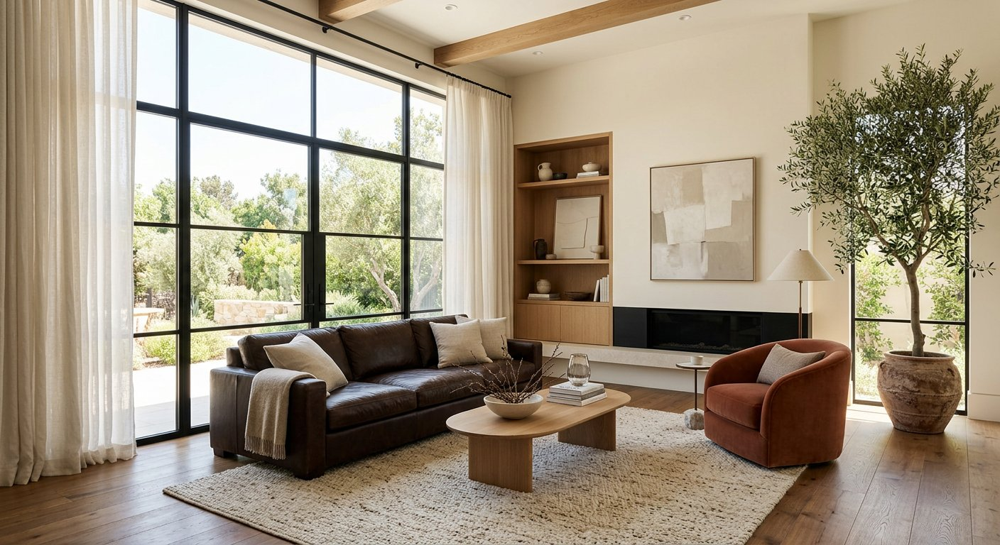
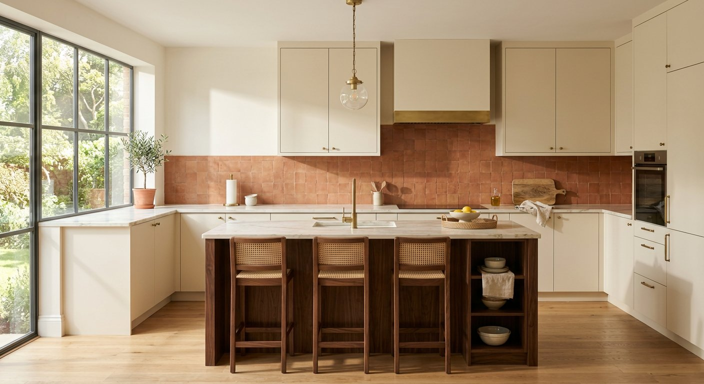
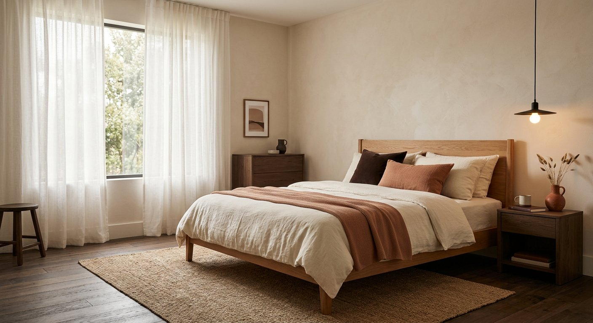
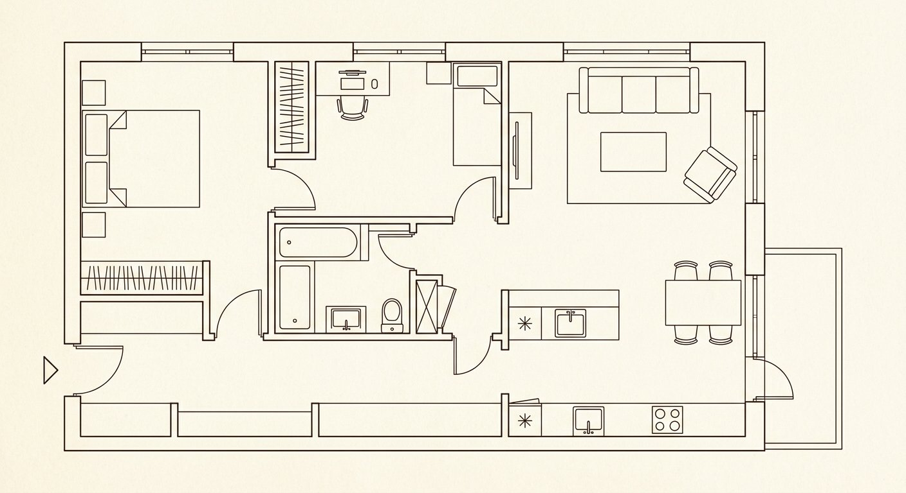

Снесли стену между кухней и гостиной
Освободили общее пространство и получили свет с двух сторон. Кухонный остров стал местом для завтраков и уроков, а не просто рабочей поверхностью.
Кейс · Квартира
Квартира 78 м² в Заречном: две спальни, открытая кухня-гостиная и один большой вопрос — как сделать так, чтобы дом был тёплым, а не просто красивым.



Задача
«Хочу дом, куда приятно возвращаться, и чтобы в гостях никто не чувствовал себя в офисе».
Исходная квартира была разделена на маленькие комнаты, с тёмным коридором и холодной светлой отделкой. Семья с двумя детьми хотела одну общую зону для разговоров и готовки, но с местами для тишины.
Нужно было уложиться в бюджет без переделки инженерии в санузле и сохранить окна в исходном месте.
Решения
Освободили общее пространство и получили свет с двух сторон. Кухонный остров стал местом для завтраков и уроков, а не просто рабочей поверхностью.
Кремовые стены, терракота в текстиле и тёмный шоколад в мебели. Такой набор визуально смягчает пространство и не устаёт к вечеру.
Общий свет на потолке, подвесные лампы над столом и островом, торшеры у дивана. Вечером гостиная меняет характер без лишних переключений.
Гардероб и шторы заняли стену целиком, а кровать поставили так, чтобы ребёнок не просыпался от света из коридора. Ничего лишнего на виду.

Планировка
Результат
Цифры демонстрационные: это пример того, как мы описываем результат в кейсах.